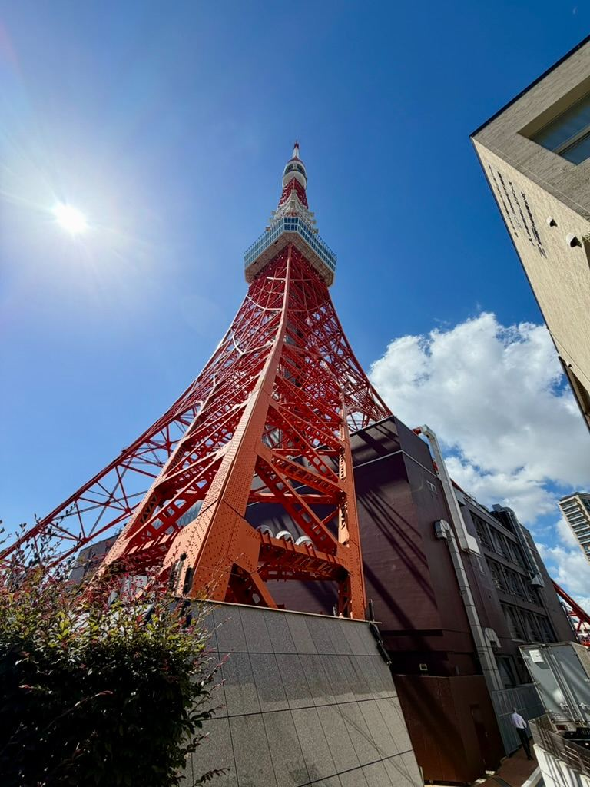
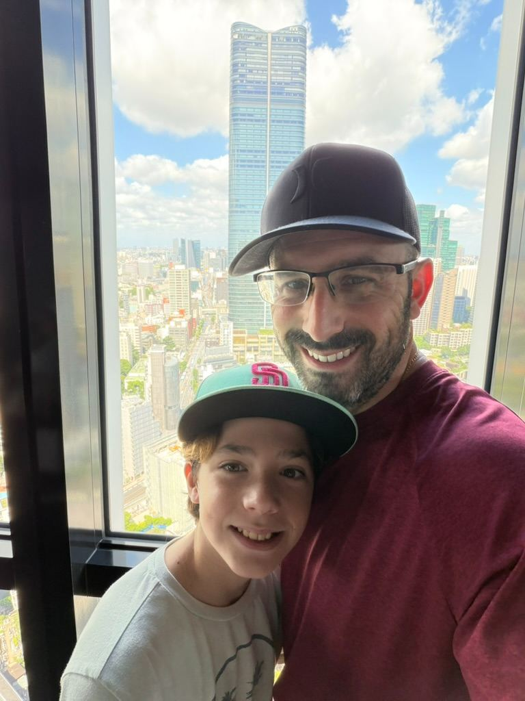
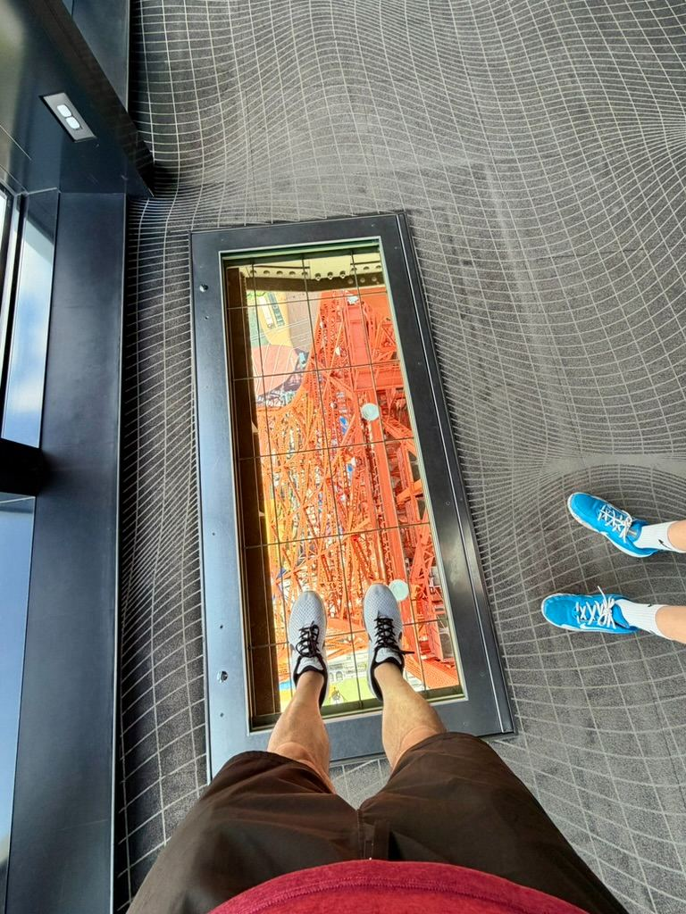
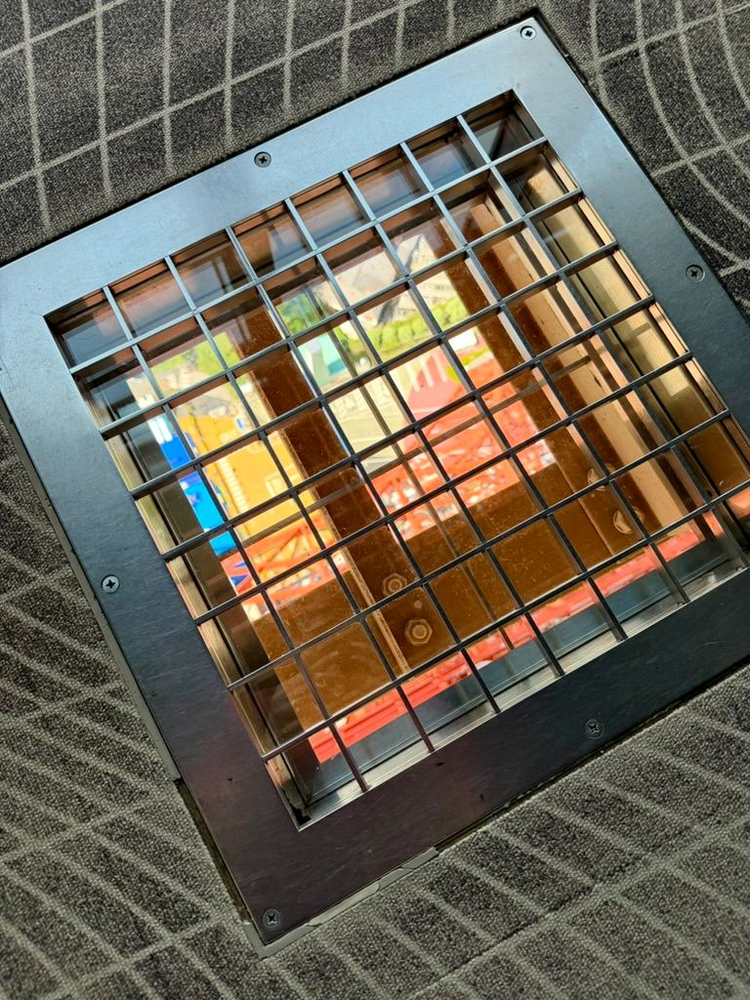

Ascending an Icon: What It’s Really Like Inside Tokyo Tower! 🗼




Watch on YouTube →
Ascending an Icon: What It’s Really Like Inside Tokyo Tower! 🗼
If you’re planning a trip to Japan, standing beneath the iconic red-and-white lattice of Tokyo Tower is almost certainly on your travel bucket list. Standing at 333 meters, this classic landmark has defined the Tokyo skyline since 1958.
We recently visited Tokyo Tower on a bright, sunny day—and captured the whole journey in our latest YouTube Short! Here’s your ultimate guide to visiting Tokyo Tower, what to expect inside, and how to make the most of your views over the city.
1. Arriving & Beating the Summer Heat
As you approach Tokyo Tower from street level [], the sheer scale of the structure is breathtaking. On hot Tokyo summer days, the venue sets up cooling mist stations around the grounds near the entrance []—a lifesaver before you head inside!2. Tickets & Pricing Breakdown
When entering FootTown (the building directly beneath the tower), head toward the main ticketing hall []. Tokyo Tower offers a few observation options depending on how high you want to go:- Main Deck (150m):
- Adults: ¥1,500
- High School: ¥1,200
- Elementary / Junior High: ¥900
- Children (4+): ¥600
- Adults: ¥1,500
- Top Deck Tour (250m): Includes an audio guide, photo service, and access to the upper observation deck (¥3,500 for adults).
3. History Alley & Construction Marvels
Before boarding the elevator, you'll walk through Histories Alley []. This exhibit gives a fascinating look into the tower's history:- Scale Models: Detailed 1:20 antenna models showing how broadcasting signals operate [].
- Archival Photography: Historic black-and-white photos documenting the brave steeplejacks and steelworkers who assembled the tower by hand in the late 1950s [].
4. The Glass Elevator Experience
The ride up to the 150-meter Main Deck is an experience in itself []. The elevators feature glass panels facing inward toward the tower, giving you an up-close look at the crisscrossing red steel beams as you rise above the city [].5. 360° Views Over Tokyo
Stepping onto the observation deck reveals sprawling views in every direction []:- Historic Landmarks: Look straight down to spot Zojoji Temple nestled amidst green trees right next to the tower [].
- Tokyo Bay & Rainbow Bridge: On clear days, you can see all the way out to Tokyo Bay and the Odaiba waterfront [].
- Interactive View Guides: NFC/QR code stickers on the windows let you tap your phone for digital guides explaining what buildings and landmarks you're looking at [].
- Look Down! Don't miss the glass floor sections where you can look straight down to see the shadow of Tokyo Tower cast over the grounds below [].
Practical Tips for Visitors
- Best Time to Visit: Mid-afternoon allows you to catch daylight views, enjoy the historical displays, and watch the city transitions into evening light.
- Nearest Stations: Walkable from Akabanebashi Station (Oedo Line), Kamiyacho Station (Hibiya Line), or Onarimon Station (Mita Line).
- Don't Forget FootTown: The base of the tower is packed with souvenir shops, character cafes, and neon photo-ops [].
Watch the Short!
Check out our full experience in motion here:👉